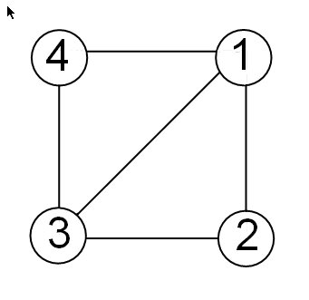

unmesh
Convert edge matrix to coordinate and Laplacian matrices
Syntax
[L,XY] = unmesh(E)
Description
[L,XY] = unmesh(E) returns the Laplacian
matrix L and mesh vertex coordinate matrix XY for
the M-by-4 edge matrix E. Each
row of the edge matrix must contain the coordinates [x1
y1 x2 y2] of the edge endpoints.
Input Arguments
E | M-by-4 edge matrix E. |
Output Arguments
L | Laplacian matrix representation of the graph. |
XY | Mesh vertex coordinate matrix. |
Examples
Take a simple example of a square with vertices at (1,1), (1,–1),(–1,–1), and (–1,1), where the connections between vertices are the four perpendicular edges of the square plus one diagonal connection between (–1, –1) and (1,1).

The edge matrix E for this graph
is:
E = [1 1 1 -1; % edge from 1 to 2 1 -1 -1 -1; % edge from 2 to 3 -1 -1 -1 1; % edge from 3 to 4 -1 -1 1 1; % edge from 3 to 1 -1 1 1 1] % edge from 4 to 1
unmesh to create a Laplacian matrix and mesh coordinate matrix
from the edge
list.[L,XY] = unmesh(E);
unmesh returns the Laplacian matrix
L as a sparse
matrix.
L
L = (1,1) 3 (2,1) -1 (3,1) -1 (4,1) -1 (1,2) -1 (2,2) 2 (4,2) -1 (1,3) -1 (3,3) 2 (4,3) -1 (1,4) -1 (2,4) -1 (3,4) -1 (4,4) 3
L in regular matrix notation, use the full
command.full(L)
ans =
3 -1 -1 -1
-1 2 0 -1
-1 0 2 -1
-1 -1 -1 3
XY returns the coordinates of the corners of
the
square.XY
XY =
-1 -1
-1 1
1 -1
1 1